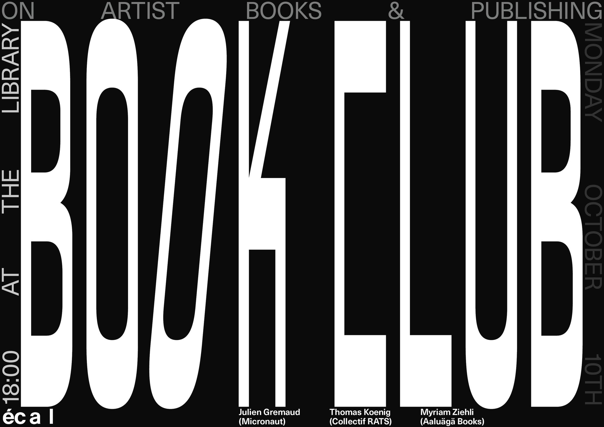

An online book store is a web application that allows customers to buy books online. Customers can search for a book by title or author using a web browser, add it to their shopping cart, and then purchase it using a debit or credit card transaction.
“Bookshops aren't just places to buy books, they're places of community, of gathering and this is something that's actively fostered by so many bookshops,” Ash, 29, from Yorkshire,says.
The question was never “What do I want to read?” but rather “Who do I want to be?” —and bookstores were shrines I pilgrimaged to for answers. I didn’t have much money and had to be intentional in my selections. I’d pull a book from the shelf and study its cover, smell its pages, wander into the weather of its first lines and imagine the storms to come—imagine a wiser, wilder me for having been swept away by them. It’s something I still feel in my forties. I’m still dazzled by possibilities when I walk into a bookstore.